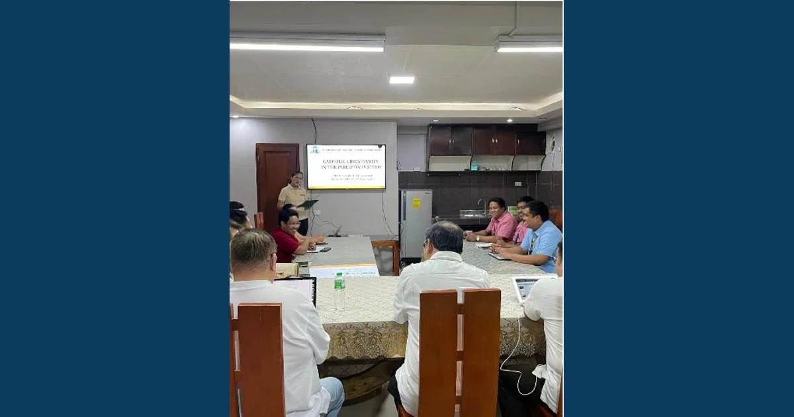

Research Director Ryan C. Fontanilla and IT Dean Engr. Myke Albert Tejada Participate in Collaborative Study

Research Director Ryan C. Fontanilla and IT Dean Engr. Myke Albert Tejada represented MCNP and ISAP at the Archdiocese of Tuguegarao meeting for the CBCP-UST initiative, "Lights and Shadows on the Present State of Catholic Christianity in the Philippines toward Becoming a Synodal Church."
Read full article